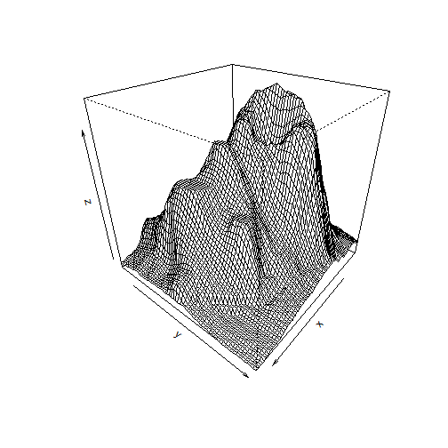

- Create a functional ShinyApp with interactive features
- Keep the package simple, as requested
- Avoid any graphical tasks on the server end (everything on the client)
- Be original, going beyond statistical bargraphs
Simabo
Enthousiast tinkerer
The app (here, by the way) loads one of the default R datasets, "Volcano". This dataset of Mount Eden ('Maunga Whau', in Auckland, New Zealand) is used to reproduce the topology.
We use the persp function to create a mesh from the matrix of points:
z <- volcano
x <- (1:nrow(z))
y <- (1:ncol(z))
persp(x, y, z, theta = 130, phi = 30)

Calculations and rendering being done in software mode (i.e., not using any hardware-acceleration technique), there is a serious lag of 1-2 seconds between user interaction and screen update.
This shouldn't be a problem as the exercise was about the interaction itself and not the end result.
Here is a list of improvements that any interested reader can try at home:
persp to persp3d, using the RGL Package in Shiny (see next slide)If you want to experiment further with topological data in R, take a look at:
Thanks for reading, have fun!